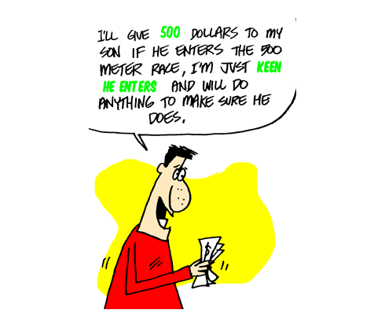

Learn to count in Spanish....from one to ten, from one to one hundred, from one to millions!Learn to count in Spanish.One of the first things a beginner must do when learning Spanish is to learn to count.There are ways to speed this up, and make your recall more efficient. Learn with Ricky Martin's Song - count from one to ten in Spanish, well ... nearlyYou may have heard Latino pop singer Ricky Martin's song in which he starts by counting in Spanish, uno, dos, tres, cuatro, cinco, cinco, seis.If you know this one, you are nearly able to count in Spanish up to ten... ...but just remember the repeating of cinco is for musical effect! Anyway, here goes. Dive in and learn to count in Spanish for the following:
Count in Spanish from Zero to a hundred, 0 to 100
Notes on learning to count in Spanish
So now let's learn to count in Spanish up to a million or more...Now you know how to count to a hundred in Spanish, you just follow the same patterns and you'll soon get to be able to count in Spanish to a million and beyond.Be sure to read about the few little traps in Spanish counting here and there...
...did you notice something about the number 500 in Spanish?500 ... quinientos Yes, be careful of that one. It sounds a bit like: KEEN HE ENTERS... so an easy way to remember this is with a little cartoon...  Exceltra© Learn Spanish 200 Words a DayLearning words and Spanish phrases with similar cartoons and 'word-plays' using these fun accelerated learning Spanish techniques does make learning Spanish words and Spanish vocab much, much easier and more efficient. (You can get cartoons and memory triggers for every basic number in Spanish). & a few more numbers in Spanish...
and here's how to count first, second, third etc in Spanish
...but be careful of these little Spanish counting traps...While the Spanish says primero, segundo, tercero be aware when learning to count in Spanish that they say: el primer piso and el tercer piso.Speed up your Spanish counting learningUsing modern techniques you can learn and remember foreign language vocab, Spanish vocabularly and REMEMBER the words longer, easier and quicker?
Learn to count in Spanish the 200 Words a Day! way Learn how to count in Spanish Copyright© 2004-2011. All rights reserved. Learn Spanish Help©
|
||||||||||||||||||||||||||||||||||||||||||||||||||||||||||||||||||||||||


 Custom Search |
Would you prefer to share this page with others by linking to it?